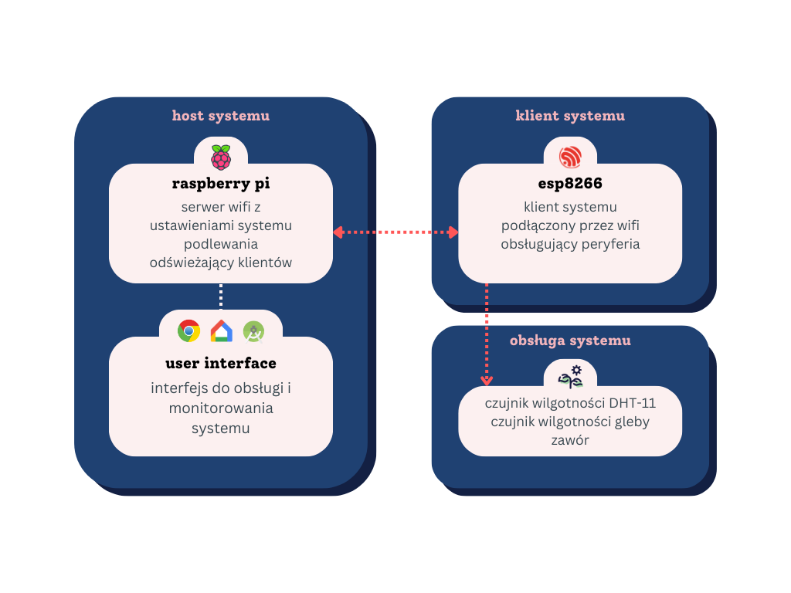
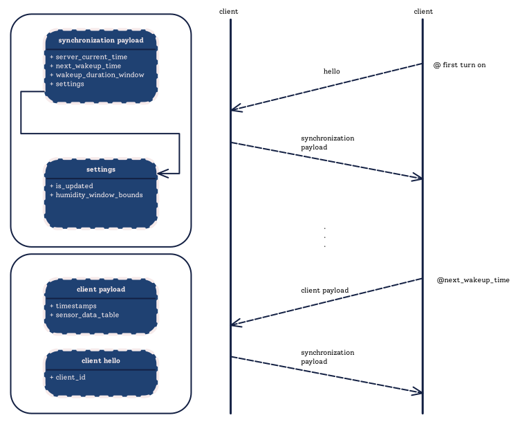
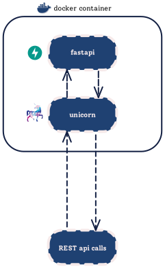
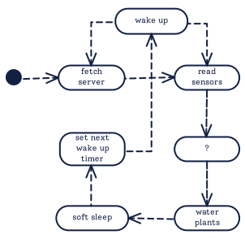
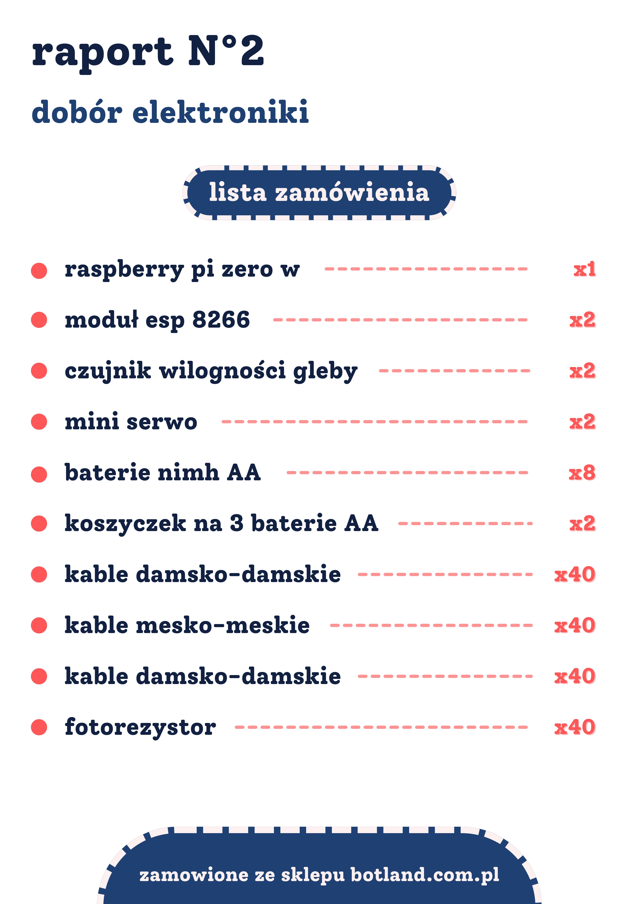

Architektura systemu podlewania
Diagram systemu

Host Systemu
- Raspberry Pi pełni rolę głównego hosta, na którym działa system dla klientów serwera.
- Host pełni rolę zarządcy klientów oraz jest odpowiedzialny za obsługę interfejsu użytkownika
- Host pozwala na obsługę Google Home, Web serwera i aplikacji Android
Sensoryka i Sterowanie Doniczką
- W doniczce znajdują się różnorodne sensory mierzące poziom wilgotności gleby, temperaturę otoczenia, poziom światła a także wilgotność powietrza.
- Mikrokontroler zintegrowany w doniczce (ESP8266) odczytuje dane z sensorów i przesyła je do hosta w celu podjęcia decyzji dotyczących nawadniania i innych parametrów środowiska roślinnego.
- Mikrokontroler steruję zaworem dopływu wody do doniczki
- Zestaw sensorów składa się z czujnnika wilgotności i temperatury powietrza (DHT-11), czujnika natężenia światła (fotorezystor), oraz czujnika wlgotności gleby (Cytron Maker Soil Moisture)
Komunikacja Między Doniczką a Raspberry Pi
- Mikrokontroler w doniczce komunikuje się bezprzewodowo przez Wi-Fi z hostem na Raspberry Pi.
- Dane z sensorów są przesyłane do Raspberry Pi, które przetwarza te informacje i podejmuje decyzje na podstawie zaprogramowanych algorytmów.
Schemat UML systemu
Łączność serwer-klient

Działanie serwera

Działanie klienta

Baza Danych i Przetwarzanie
- Raspberry Pi korzysta z lokalnej bazy danych do przechowywania historii pomiarów i danych dotyczących rośliny.
- Algorytmy na Raspberry Pi analizują dane wejściowe i na ich podstawie sterują warunkami w doniczce, takimi jak nawilżanie gleby.
Spis elementów
- Raspberry Pi Zero W
- 2 moduły ESP-8266
- 2 czujniki wilgotności gleby Cytron Maker Soil Moisture
- 2 serw Feetech FT90R-C002
- 8 baterii Ni-Mh
- 2 koszyczki na 3 baterie AA
- 40 przewodów męsko-żeńskich
- 40 przewodów żeńsko-żeńskich
- 2 fotorezystory
- 2 czujniki temperatury i wilgotności DHT11
